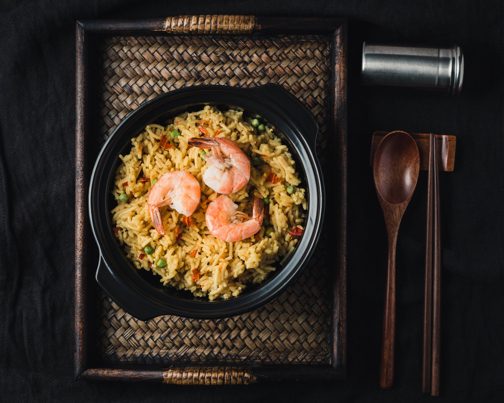

-
Let us teach you how to cook a delicious
Fried Rice meal!
- OR, you might want to get the knowledge of the efik goddesses, to make great, tasty Afang Soup!


-
As well, discover the best beans and dodo (plantain) recipe